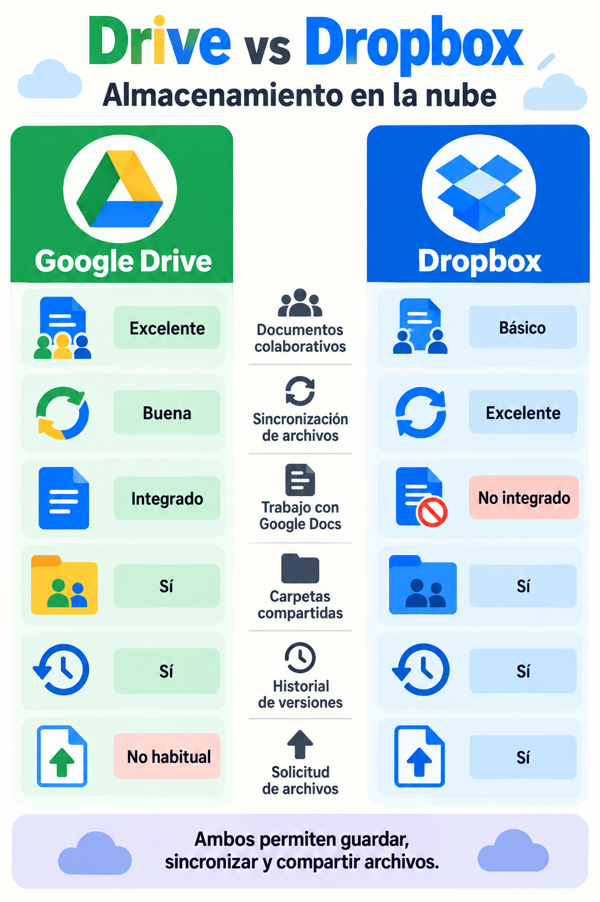

Pt2.1 · 6 horas
Almacenamiento en la nube: Drive y Dropbox
Gestionarás los recursos de la web de tu evento con dos servicios de almacenamiento en la nube y documentarás todo el proceso.
Documento de evidencias
Haz una copia del documento de Evidencias de Pt2.1 y complétalo a medida que avanzas. No entregues solo capturas: cada evidencia debe incluir un resumen breve.
Para cada ejercicio incluye
- Qué es: explica en 2 o 3 líneas el concepto trabajado.
- Qué he hecho: resume las acciones realizadas.
- Evidencia: añade una captura que demuestre el resultado.
- Comprobación: indica si funcionó o qué incidencia encontraste y cómo la resolviste.
¿Qué es el almacenamiento web o en la nube?
Es un servicio que guarda archivos en servidores conectados a internet. En lugar de depender únicamente del disco duro de un ordenador, podemos acceder a los archivos desde un navegador, una aplicación móvil o un programa de escritorio.
Sus beneficios principales son:
- acceso desde distintos dispositivos
- sincronización automática
- colaboración
- historial de versiones
- copias de seguridad
- posibilidad de compartir archivos con permisos concretos
Los servicios más conocidos son Google Drive, Dropbox, Microsoft OneDrive, iCloud Drive, MEGA, Box y Nextcloud.
Dos formas de trabajar con archivos en la nube

Google Drive
Está integrado con Google Docs, Sheets, Slides y Forms. Es especialmente útil para crear documentos colaborativos, organizarlos en carpetas, compartirlos y consultar el historial de versiones.
Dropbox
Está centrado en la sincronización de archivos entre una carpeta del ordenador y la nube. Es útil para imágenes, carteles, vídeos y recursos de una web.
Según la medición actual de 6sense para empresas detectadas dentro de la categoría File Sharing, Google Drive representa el 14,82 % y Dropbox el 3,26 %. No son porcentajes de toda la población: describen la presencia de cada servicio entre las empresas que analiza esa fuente. Google Drive destaca por su integración con herramientas colaborativas; Dropbox, por su enfoque en archivos y sincronización.
Fuente: 6sense, File Sharing market share (consulta: octubre de 2026).
Importante: Drive y Dropbox sirven para guardar, sincronizar y compartir archivos. No son el alojamiento para publicar una web HTML.
Organiza la producción en Google Drive
- Abre la carpeta del evento creada en AEA1.
- Crea las carpetas
03_Web_publicable,04_Evidencias_AEA2y05_Copias_de_seguridad. - Guarda en
03_Web_publicablelos recursos que usarás para la web: textos, imágenes o cartel. - Elige un documento del evento, crea una versión de prueba, realiza un cambio y localiza su historial de versiones.
- Redacta en el documento de evidencias qué permite hacer el historial de versiones y cuándo puede ser útil.
Evidencias: estructura de carpetas, historial de versiones y resumen de los permisos que usarías para colaborar y para compartir con el público.
Instala y sincroniza Dropbox
- Crea una cuenta de Dropbox o inicia sesión con la cuenta indicada.
- Instala el cliente de Dropbox en el ordenador y completa la configuración inicial.
- Crea la carpeta
Recursos_eventodentro de Dropbox. - Copia en ella un cartel o una imagen de tu evento y comprueba que aparece también en Dropbox web.
- Modifica el archivo o sustitúyelo por una nueva versión y verifica que la sincronización se completa.
- Comparte la carpeta con un compañero o compañera con permiso de solo lectura.
Evidencias: carpeta local sincronizada, el mismo archivo en Dropbox web, permiso compartido y un resumen de qué significa sincronizar.
Recupera versiones y solicita un archivo
- Haz tres cambios visibles al cartel o al programa del evento.
- Consulta el historial de versiones en Dropbox y recupera una versión anterior.
- Crea una solicitud de archivos para que un compañero entregue una imagen o un recurso para el evento.
- Guarda el recurso recibido dentro de
Recursos_evento.
Evidencias: historial de versiones, solicitud de archivos, archivo recibido y una explicación de la diferencia entre compartir una carpeta y solicitar un archivo.
Decide qué servicio usar
Completa en el documento de evidencias una tabla comparando Drive y Dropbox en: creación de documentos colaborativos, sincronización de archivos, carpetas compartidas, historial de versiones y recepción de archivos externos.
Termina con una conclusión: ¿qué servicio usarías para la documentación del evento?, ¿cuál usarías para carteles e imágenes?, ¿por qué? Recuerda indicar también por qué ninguno de los dos será el alojamiento de la web.
Revisión final
Viernes 30 de noviembre
- El documento de evidencias contiene explicaciones breves además de capturas.
- Las capturas muestran el resultado de cada acción.
- La carpeta del evento está organizada y tiene una copia de seguridad.
- Has comparado Drive y Dropbox y has justificado tu decisión.